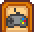

Kontroller
Gezinti kısmına atla
Arama kısmına atla
| Başlangıç Kılavuzu |
Oyuncu | Seçenekler | Kontroller | Mobil Kontroller |
Sağlık | Enerji | Yetenekler | Gün Döngüsü |
Tüm kısayol tuşları, menüyü açıp Seçenekler sekme 
Klavye & Fare
| Key | Description |
|---|---|
| W A S D |
W Yukarı Taşı A Sola taşı S Aşağı inmek D sağa gitmek |
| Sol Tık, C | Eşyayı Yerleştir yada Alet Kullan. |
| Sağ Tık, X | Eylemi Kontrol Et / Yap |
| Escape, E | Menüyü açıp kapar |
| F | Günlüğü açar |
| M | Harita pencerisini acar |
| Sol Shift | Koşmak |
| 1 - 0, - , + | Envanter kısayolları |
| F4 | Fotoğraf modu |
İpuçları
- Shift + sol-tık bir envanter ögesini/ yığınını üst satıra taşımak için.
- Bir mağazanın/satıcının envanter penceresinden sürekli ürün satın almak için Shift + Shift + sol-tık.
- 5 adet ürün satın almak için sağ-tık. Bir seferde 5 ürün satın almaya devam etmek için Shift + Sağ-tık tıklamaya basılı tutun.
- Envanter/sandık'daki Bir eşyanın hepsini almak/koymak için bir eşyaya Sağ-tık.
- envanter/sandık'daki Bir eşyanın yarısını almak/koymak için bir eşyaya Shift + sağ-tık.
- Ögeleri hızlı bir şekilde toplamak için fareyi bir makine/alet (örn., Fıçılar, Kavanozlar, Arı Kovanları) üzerinde hareket ettirirken sağ-tık veya sol-tık'ı basılı tutun.
- Ekipmanı otomatik olarak doldurmak için envanterde başka bir ögeyi seçin.
- Eşya yenilebilir ise sol-tık kullanmalısınız, yoksa oyun eşyayı tüketmek isteyip istemediğinizi soracaktır.
- Envanter penceresinde seçili bir ögeyi kalıcı olarak silmek için del. (Envanteri açmak için E ve yaEsci kullanın, ardından seçmek için bir ögeye/yığına sol tıklayın, ardından del tuşuna basın.)
- Açılış ekranındayken Esc tuşuna basmak sizi doğrudan ana menü seçim ekranına götürür.
Xbox One / Xbox 360 Kontrolleri
Denetleyici düğmeleri yeniden atanamaz.
Üst Dünya'da
Menüde
| Button | Description |
|---|---|
Left Joystick |
İmleci Hareket Ettirmek |
Right Joystick |
Liste |
| Seçmek | |
| B Start |
Menüden Çıkmak |
| Menü Sekmesi Değiştirmek | |
| Bir Ögeyi Taşı / Ögeyi Kullan (yem, vb.) |
Kontrol Şeması
PS4 Kontrol Cihazı
Kontrol Şeması

Gelişmiş Kontroller
- Aynı anda birden fazla item alırken DAİRE veya X tuşuna basılı tutarak alım sürecini hızlandırabilirsin.
- Envanter menüsü açıkken ögeleri otomatik olarak sıralamak için Dokunmatik Yüzey düğmesine basın.
- Envanterinizden bir ögeyi/ögeleri seçtikten sonra DAİRE'ye basmak, ögeyi çöp kutusu simgesine taşır.
Switch Kontrol Cihazı
Kontrol Haritası
Esya Yerleştirme Tavsiyeleri
- En kullanışlı kontrollerden biri Sağ Çubuk. Mobilya, kilim, pencere vb. eşyaları tam olarak istediğiniz yere yerleştirmek için kullanılabilir. Oldukça hassastır ancak özellikle pencere yerleştirmek için kesinlikle gereklidir.
- Sağ Çubuğu kullanarak bir halıyı yerine taşırken, halıyı Döndürmek için Ayı kullanın.
Araç Çubuğu İpuçları
- Sulama Kabı gibi araçların daha yüksek dereceli işlevlerini kullanmak için "Y" tuşunu basılı tutun.
- Köylülerle aletler dışında herhangi bir eşya ile etkileşim kurmak, o eşyayı köylüye hediye edecektir.
Envanter İpuçları
- Envanteri taşırken Y düğmesi her seferinde bir ögeyi hareket ettirecek veya birden fazla ögeyi taşımak için basılı tutacaktır.
- Envanterinizden bir öge(ler) seçtikten sonra B tuşuna basmak, onu çöp kutusu simgesine taşır. *Envanterinizdeyken - tuşuna basmak, ögeleri hızlı bir şekilde organize edecektir.
- Herhangi bir dükkandan ürün satın alırken A ve Y tuşlarına basmak, oyuncunun iki kat daha hızlı ürün satın almasını sağlayacaktır.
Silahlar
- Y' tuşuna basmak temel saldırı gerçekleştirirken, B tuşuna basmak blok veya alternatif saldırı gerçekleştirir.